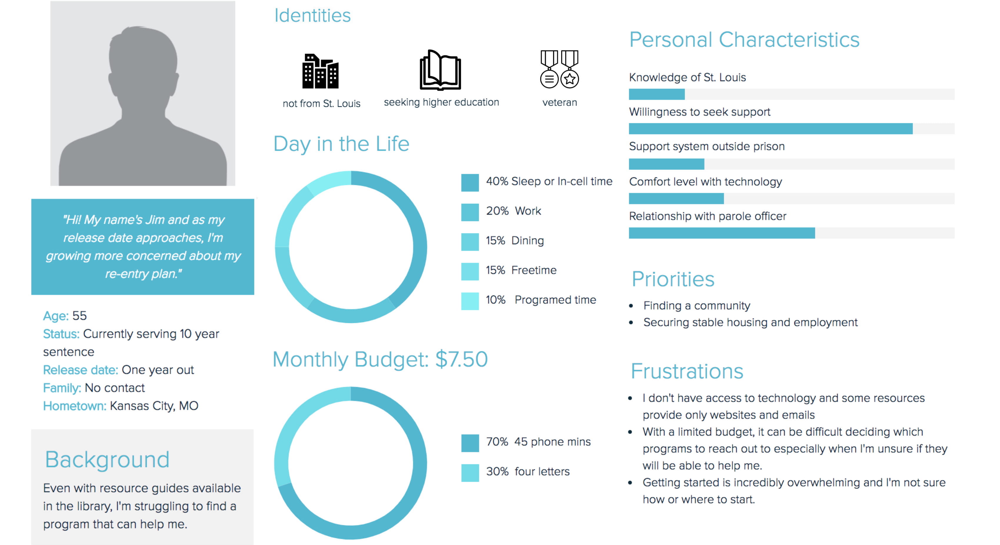
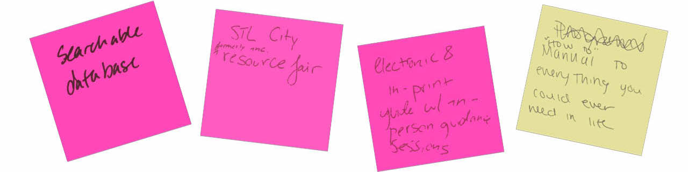

Project Overview
How can we improve the reentry process for formerly incarcerated individuals?
Research
Community Partner
Criminal Justice Ministry (CJM)
Interviews
Ten individuals who had been incarcerated for 10+ years with varying times since release
User Persona

Insights
- St. Louis' current most-used resource guide is overwhelming, and at times, incorrect.
How can we most efficiently present accurate information on resources for those seeking reentry?
- Certain attributes (nature of offense, family relationships, money) can disqualify individuals from accessing resources.
How can we access and provide the most pertinent information to the diverse set of individuals seeking reentry?
- Technology is a major barrier to resources, both with its restriction in prisons and
learning curve after reentry.
How can we publish information on reentry resources in a way that minimizes barriers to access?
Updated Project Goal
How can we most efficiently connect a diverse population of currently incarcerated
individuals with the specific information they need to successfully begin their reentry process?
Ideation

Prototype